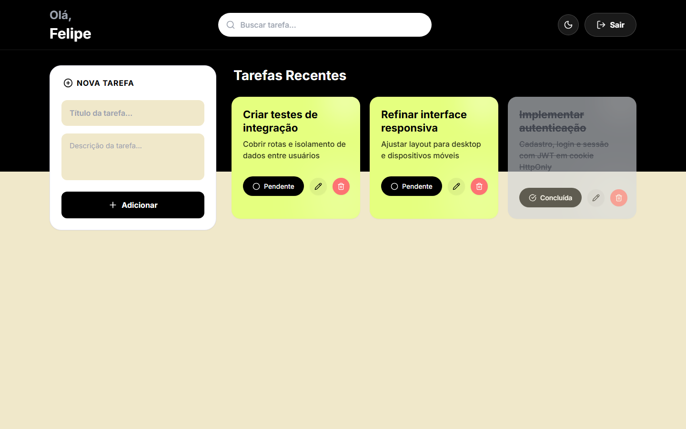

01 / 08Aplicação fullstack

Gerenciador de Tarefas
Aplicação web com cadastro, login, busca e tarefas isoladas por usuário. API em Express com PostgreSQL, JWT em cookie HttpOnly e testes de integração.
Ver código e documentação ↗